REthink.
REdesign.
REmake.
REwear.
REWARE.
Weil die Geschichte eines alten Kleidungsstücks noch nicht zu Ende ist.
Wir schauen, was schon da ist, und fragen: Was könnte daraus werden?
Eine Vision von Juanita’s Nähbox
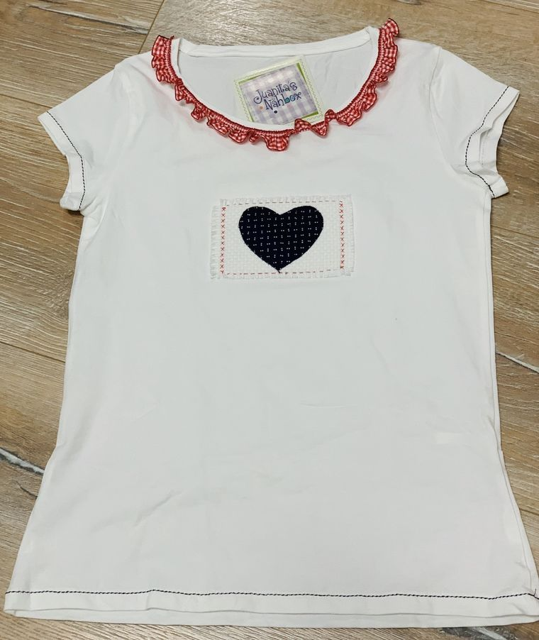
Deine Kleidung.
Neue Möglichkeiten.
Refashion · Reduce · Reimagine
Teil der Veränderung werden.
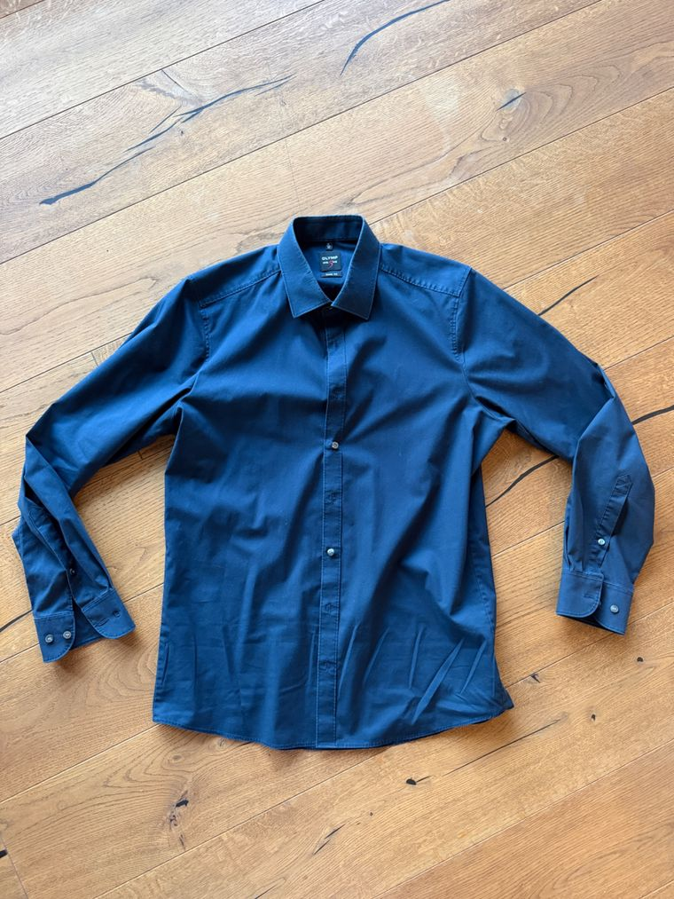
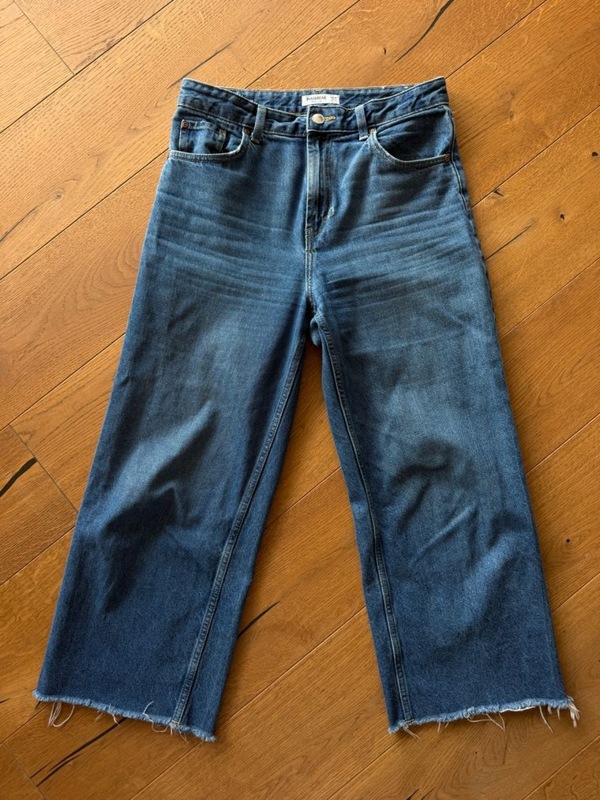
Kreativ.
Nachhaltig. Du.
- Alle Funktionen
- Design-Ideen & Anleitungen
- Verwandeln & Reparieren
- Persönlicher Kleiderschrank
- Lokale Maker & Workshops
- Teil einer nachhaltigen Community
Für jedes fertige Stück mit Foto schenken wir dir ein neues Projekt.
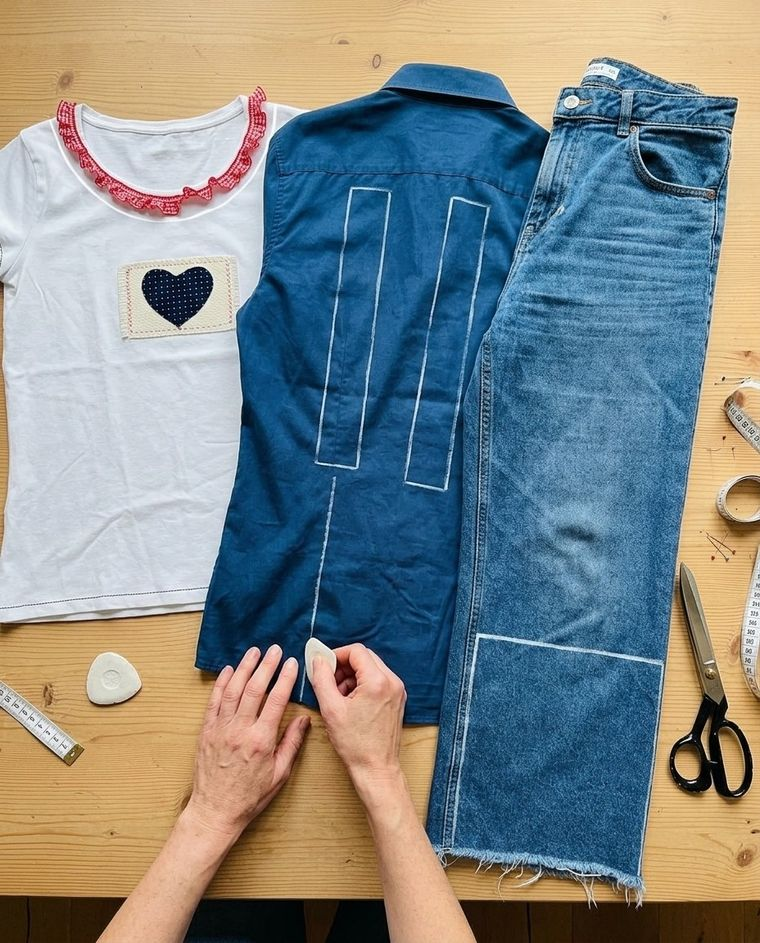
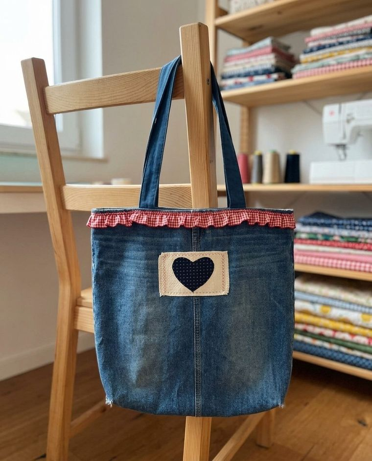
Willkommen bei REWARE!
Schön, dass du hier bist. Gemeinsam machen wir mehr aus dem, was du schon hast.
So funktioniert’sREthink.
Fotografiere ein Kleidungsstück und sieh, was daraus werden kann.
REdesign.
Wähle die Idee, die Farben und die Details.
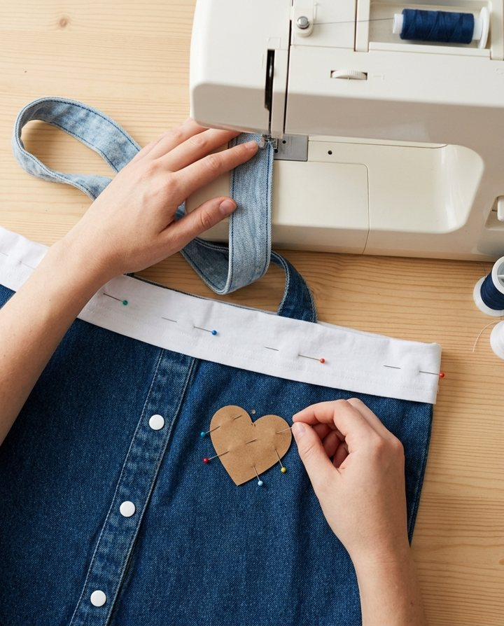
REmake.
Schnittmuster und Bilder führen dich Schritt für Schritt.
REwear.
Zeig dein fertiges Stück – und trag es wieder.
Werde Teil der REWARE-Community.
Dein Konto wurde erfolgreich erstellt!
Willkommen in der REWARE-Community. Jetzt richten wir dein Profil ein – zuerst deine Maße.
So misst du richtig.
Du brauchst nur ein Maßband. Leg es eng am Körper an, aber zieh es nicht straff.
Deine Maße.
Damit die Vorschläge perfekt zu dir passen. Zieh das Maßband.
Jetzt geht’s los!
Was möchtest du heute mit deiner Kleidung machen?
Hast du schon eine Idee?
Lade Fotos deiner Kleidungsstücke hoch oder zeige uns deine Skizze.
Deine Kleidung ist der Anfang.
Fotografiere 2 oder 3 Kleidungsstücke, flach ausgelegt und ganz im Bild.
Deine Auswahl.
wird gelesenDas hat die Engine in deinen Stücken erkannt.
Weißes Jersey-Shirt mit Vichy-Rüsche und Herz-Patch
Jersey · leicht · dehnbarBlaues Popeline-Hemd, langarm
Popeline · leicht · festBlaue Wide-Leg-Jeans aus festem Denim
Denim · schwer · festDeine drei Stücke werden kombiniert …
Deine Designs.
Aus deinen drei Stücken sind zwei Vorschläge entstanden.
Für die Weste gibt es im Prototyp nur die Vorschau. Die Tasche zeigen wir dir Schritt für Schritt.
Dein Design.
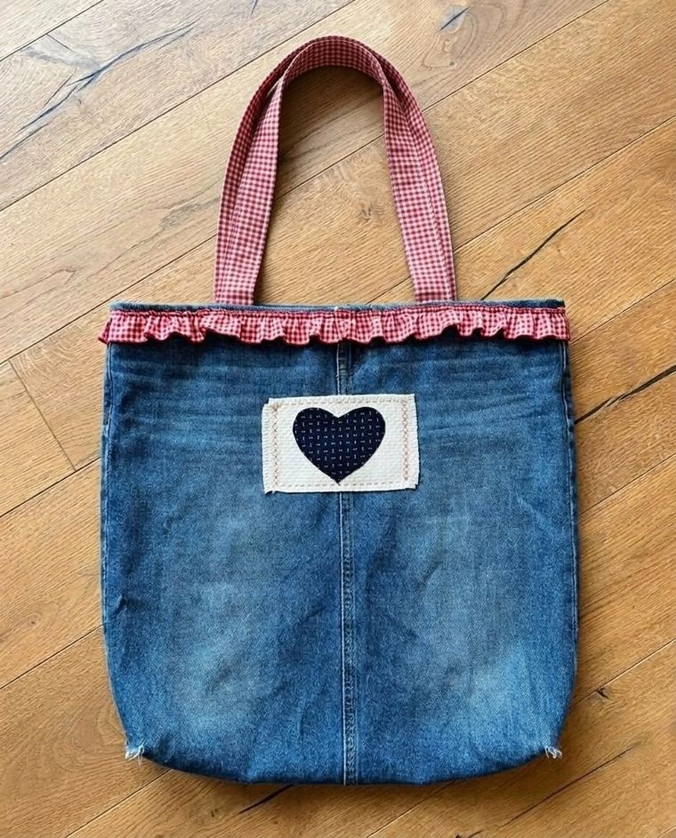
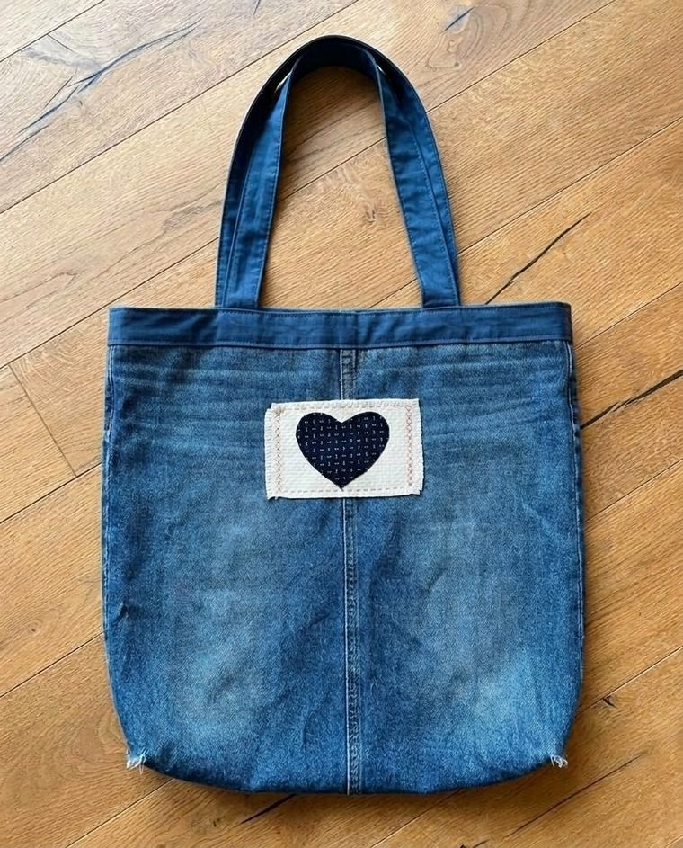
KI-Vorschau · Tasche „City Companion“Bist du zufrieden?
Dann geht’s weiter zu deiner Anleitung und deinem Schnittmuster.
Aus Alt wird Neu.
Deine Anleitung.
Schritt für Schritt zu deinem neuen Lieblingsstück.
Zuschneiden
Hosenbeine an der Innennaht öffnen, A und B je 36 × 40 cm zuschneiden. Aus dem Hemd zwei Henkelstreifen und die Innentasche schneiden. Rüsche und Herz-Patch vom T-Shirt lösen.
Detailarbeiten
Solange alles flach liegt: Herz-Patch mittig auf A, 10 cm unter der Kante, im Kreuzstich annähen. Rüsche 3 cm unter der Kante aufsteppen. Innentasche innen auf B. Henkel bügeln, zweimal falten, absteppen.
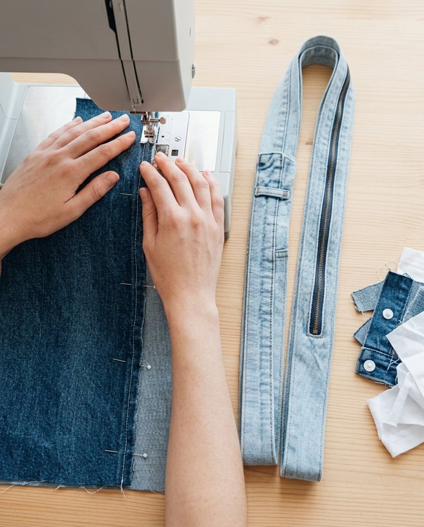
Nähen
A und B rechts auf rechts mit 1 cm Nahtzugabe steppen (Jeansnadel 100/16). Bodenecken auf 8 cm abnähen. Oberkante 1 + 2 cm einschlagen, absteppen. Henkel mit Viereck und Kreuz festnähen.
Fertig!
Deine Tasche „City Companion“ ist fertig.
- AVorderteilJeans, linkes Bein, an der Innennaht geöffnet36 × 40 cm
- BRückteilJeans, rechtes Bein36 × 40 cm
- CHenkel, 2 ×Hemd, Rücken, längs · mit Bügeleinlage64 × 12 cm
- DInnentascheHemd, Vorderteil mit Knopfleiste18 × 16 cm
- ERüschenkanteT-Shirt, Kragen, ganz abtrennenca. 52 cm
- FHerz-PatchT-Shirt, an den Kreuzstichen lösen10 × 7 cm
- Fertig
- ca. 34 × 36 cm, Boden 8 cm
- Henkel
- 64 cm lang, 3 cm breit
- Naht
- 1 cm Nahtzugabe
- Nadel
- Jeansnadel 100/16 · für das Hemd 80/12
- Druck
- A4, 100 %, Testquadrat 5 cm
Im Prototyp nur angedeutet: In der App entsteht hier das PDF zum Ausdrucken.
Nicht selbst machen?
Kein Problem! Hier findest du Schneider:innen in deiner Nähe, die dir bei der Umsetzung helfen.
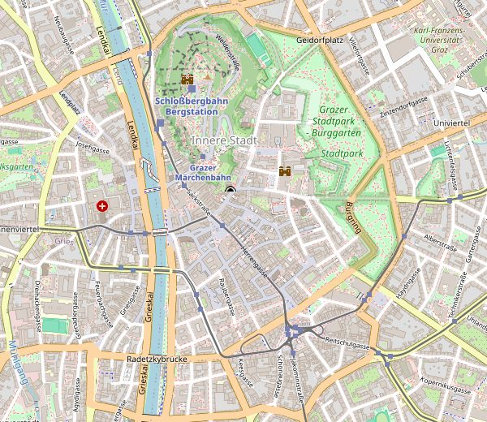
© OpenStreetMap-MitwirkendeIm Prototyp: Hier stehen Adresse, Öffnungszeiten und Telefonnummer.
Unterstützung gewünscht?
Buche ein Einzelcoaching, einen Workshop oder eine kurze Video-Hilfe bei Juanita’s Nähbox.
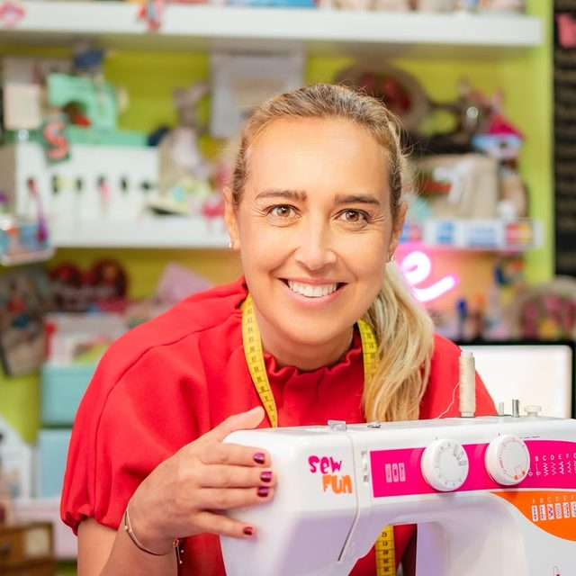
Juanita’s Nähbox
Nähen verbindet Menschen.
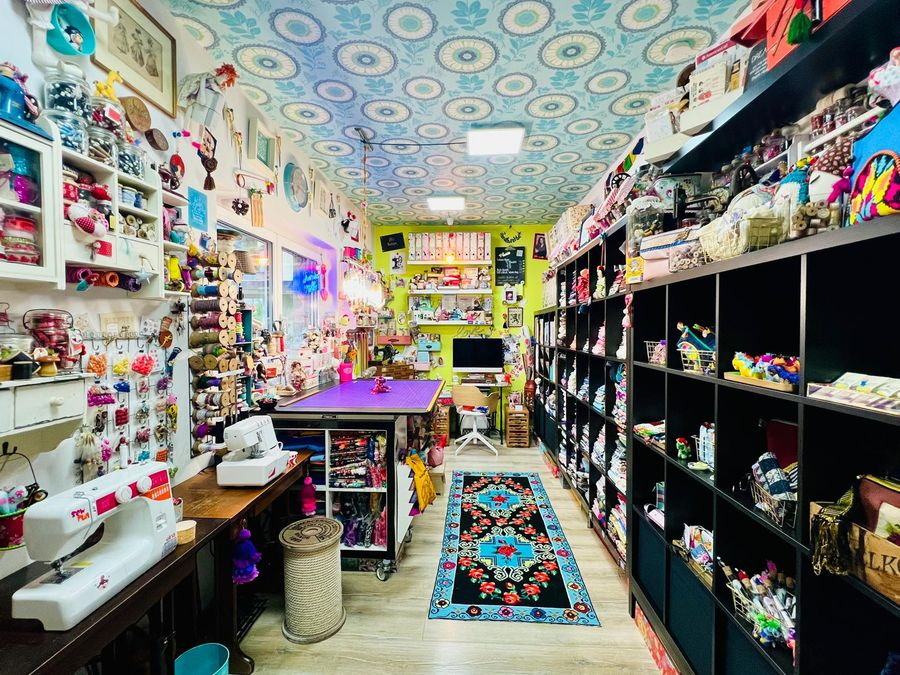
Im Prototyp: Hier öffnet sich der Kalender von Juanita’s Nähbox.
Materialien benötigt?
Unsere Partner-Stoffgeschäfte in deiner Nähe.
Zeig uns dein fertiges Stück.
Ein Foto genügt – dafür schenken wir dir dein nächstes Projekt.
Dein nächstes Projekt ist geschenkt.
Gilt für ein neues Projekt deiner Wahl.
Du machst den Unterschied.
Jede Naht erzählt eine Geschichte.
Tasche „City Companion“
aus 3 Stücken · 4 Schritte · Foto geteilt
Was möchtest du reparieren?
Wähle, was passiert ist. Die App rechnet dir den Flicken oder die Erweiterung aus.
Durchgescheuert
Jeans am Knie oder im Schritt verstärken.
kommt in Phase 2Zeig uns die Stelle.
Tippe auf das Loch.
Loch in der Brustmitte
Beispielca. 3 × 1,5 cm · Kanten leicht ausgefranst
Jersey · leicht · dehnbarDein Reparatur-Plan.
Ein Flicken mit Herz – so, wie ihn Juanita’s Nähbox näht.
- UnterlageLeinenrest 11 × 8 cm
- HerzBaumwollrest, 6 cm
- GarnRotes Stickgarn
- WerkzeugNadel, Stecknadeln, Schere
Deine Anleitung.
Vier Schritte, eine Stunde – und dein Lieblingsstück ist zurück.
Bilder 1–3: KI-VorschauLoch sichern
Die Ränder flach mit kleinen Überwendlingsstichen sichern – nicht zusammenziehen, sonst wirft der Jersey Falten.
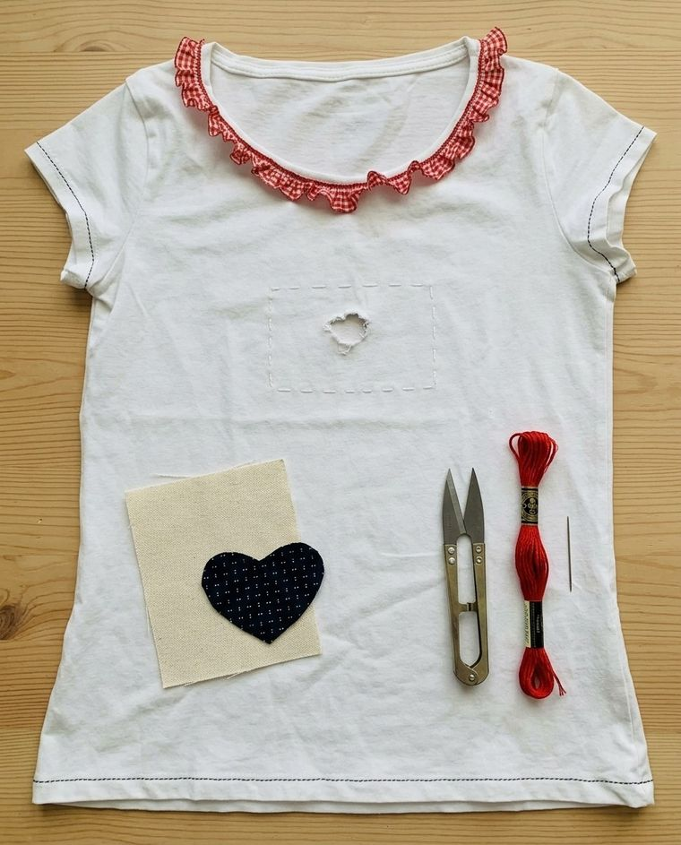
Zuschneiden
Leinen 11 × 8 cm zuschneiden, die Kanten rundum 5 mm ausfransen. Herz 6 cm aus einem Baumwollrest.
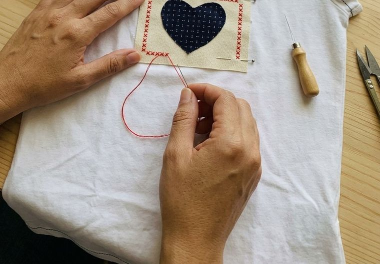
Aufnähen
Zuerst das Herz mit kleinen Stichen auf das Leinen nähen. Dann das Leinen mittig über das Loch stecken und ringsum im Kreuzstich annähen.
Fertig!
Dein T-Shirt ist wieder da – mit Herz.
Echtes StückZu eng? Größer machen.
Mit zwei Seitenstreifen aus einem zweiten Kleidungsstück.
- Seitennähte von der Achsel bis zum Saum auftrennen.
- Zwei Streifen zuschneiden, Fadenlauf längs.
- Streifen rechts auf rechts einsetzen, 1 cm Nahtzugabe.
- Saum angleichen, Nähte versäubern.
Live ausprobieren.
LiveWähle ein Foto eines Kleidungsstücks. Die Engine liest es jetzt – wie in der App.
Deine Vorschau.
Live erzeugt